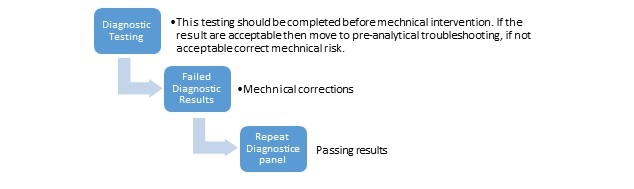

Tests: Troponin Troubleshooting (DxI)
For a collection of Troponin troubleshooting information, go to the Access Systems Applications database/Support Documents and Procedures/General/"AccuTnI Support Portfolio".
Risks that contribute to Troponin fliers are mechanical and pre-analytical. Rule out any mechanical issues prior to addressing pre-analytical issues with customers. The preferred approach is:

hsTnI
Complete the diagnostic testing by running 100 reps of hsTnI using FRESH Sample Diluent A or a control material with a dose recovery of ~18pg/mL. Acceptable results are:
- SDA - all results RLU are less than 2X S0 mean of active hsTnI calibration curve.
- Low Control - values within +/- 2SD control limits.
Refer to the hsTnI NRFP Troubleshooting Checklist.pdf document for more details.
AccuTnI+3
Complete the diagnostic testing by running 100 reps of AccuTnI+3 using FRESH wash buffer or a control with a dose recovery of ~0.04 ng/mL. Acceptable results are:
- Wash buffer - all results </= 0.03 ng/mL
- Low control - standard deviation </=0.01 ng/mL
If any of the results are outside limits, troubleshoot hardware similar to that of HS system check failure troubleshooting. See items below listed in decreasing order of importance or likelihood.
| Area | Check for |
| Aspiration |
|
| Incubator and wash pick-and-place (due to splashing during placement) |
|
| Analytical module wash arm |
|
| Fluid dispense | Wash pump buffer dispense:
|